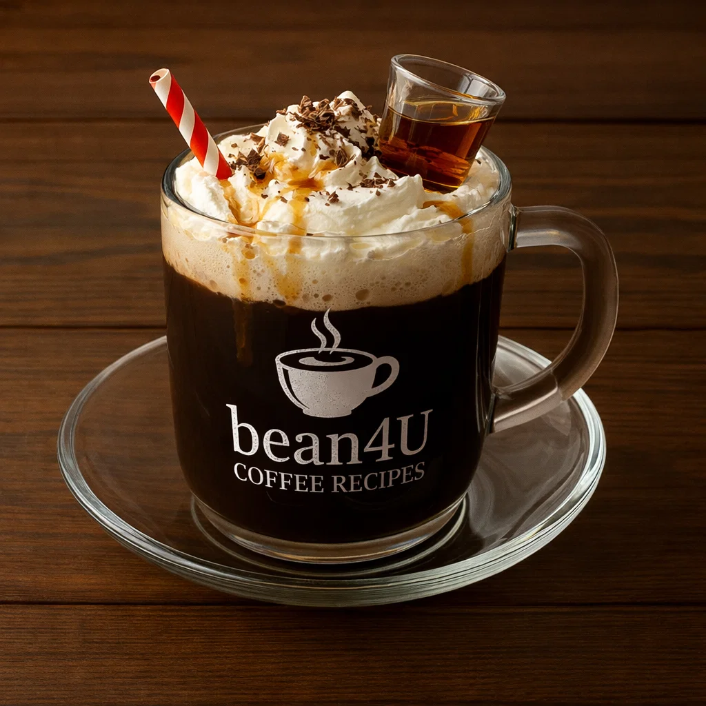

Pharisäer Kaffee

Ingredients
- Freshly brewed strong coffee
- 2 tbsp dark rum (or to taste)
- 2 tsp sugar
- Whipped cream to top
Preparation
- Pour sugar and rum into a heatproof glass.
- Add hot coffee, stir to dissolve sugar and mix with rum.
- Top generously with whipped cream; do not stir—the cream insulates aroma.
- youtube short quickly explaining it:
- short Explanation
Video from @germantraditions
Channel